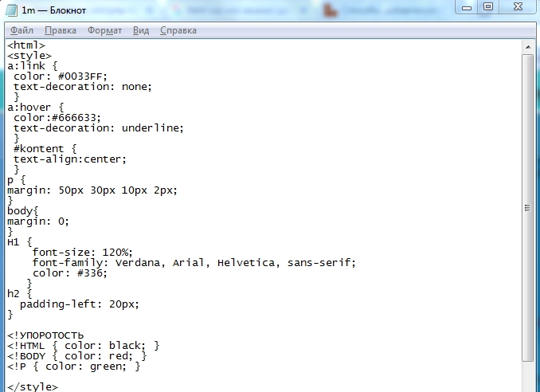
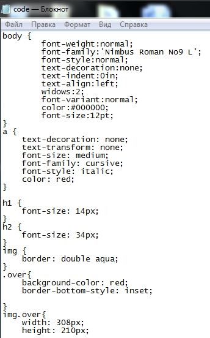

Розробка власної таблиці стилів
Для гіпертекстової сторінки сторінки, що була створена в першій лабораторній роботі добавити каскадну таблицю стилів. При здачі лабораторної роботи слід вміти змінювати стилі елементів у відповідності до вимог викладача.
Вирішення
